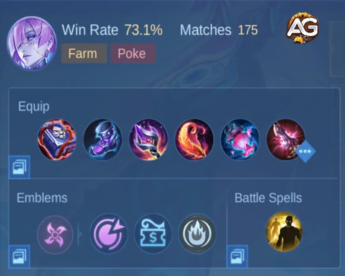

Como Dominar Novaria em Mobile Legends
Novaria é uma das heroínas mago mais poderosas em Mobile Legends: Bang Bang, especialmente em ranks altos como Mítico. Suas habilidades únicas a tornam uma atiradora mágica versátil e mortal, capaz de causar uma quantidade massiva de dano à distância, enquanto oferece utilidade para sua equipe. Neste artigo, vamos explorar em detalhes como jogar com Novaria, explicando suas habilidades, estratégias de build e dicas para dominar o campo de batalha com ela. Seja você um jogador iniciante ou experiente, este guia fornecerá insights essenciais para dominar Novaria.
Entendendo as Habilidades de Novaria
Novaria é uma heroína mago com foco em ataques de longo alcance e controle de multidão. Suas habilidades permitem que ela cause dano mágico à distância, além de fornecer visão e controle sobre o campo de batalha. Vamos detalhar cada uma de suas habilidades e entender como elas funcionam.
Habilidade Passiva: Trilha Estelar
A passiva de Novaria aprimora sua segunda habilidade, proporcionando um efeito de lentidão nos inimigos e oferecendo utilidade adicional durante o combate.
- Efeito: Quando os inimigos são atingidos pela sua segunda habilidade, Retorno Astral, sua velocidade de movimento é reduzida em 20%. Isso permite que Novaria e sua equipe persigam inimigos ou escapem de situações complicadas.
- Utilidade de Visão: Novaria também pode usar sua passiva para verificar arbustos em busca de inimigos ocultos. Quando a Meteoro Astral da sua segunda habilidade é lançada e retorna, qualquer inimigo atingido terá sua posição revelada por alguns segundos. Isso a torna uma excelente heroína para escotismo e contra emboscadas.
Habilidade 1: Meteoro Astral
Meteoro Astral é a principal habilidade de dano de Novaria, causando dano mágico e desacelerando os inimigos, além de fornecer visão em áreas importantes.
- Dano Mágico: Novaria invoca um Meteoro Astral em um local designado, causando dano mágico aos inimigos ao colidir. Além disso, os inimigos atingidos pela esfera são desacelerados em 20%, tornando-os alvos mais fáceis para ataques subsequentes.
- Limpeza de Ondas: No nível um, Meteoro Astral se torna uma ferramenta essencial para limpar ondas de minions rapidamente, devido ao seu dano extra de 80% contra minions. Isso dá uma vantagem forte na fase inicial de rotas.
- Visão: A primeira habilidade de Novaria também pode revelar inimigos escondidos em arbustos, sendo uma ótima ferramenta para manter o controle do mapa.
Dica de Habilidade: Maximize Meteoro Astral primeiro, pois melhora significativamente a fase de rotas de Novaria e fornece dano crítico em lutas de equipe.
Habilidade 2: Retorno Astral
Retorno Astral é o núcleo do kit de Novaria e uma das habilidades mais únicas do jogo.
- Tiro de Longo Alcance: Novaria envia um Meteoro Astral a uma distância e a puxa de volta para si, causando dano aos inimigos em seu caminho. À medida que a esfera retorna, ela ganha velocidade de movimento e pode atravessar terrenos, adicionando imensa mobilidade ao seu jogo.
- Interação de Habilidade: Ao pegar a esfera que retorna, Novaria pode lançá-la em uma direção de sua escolha, onde explodirá ao contato com um inimigo, causando dano adicional com base na distância percorrida.
Três Dicas Principais para Retorno Astral:
- A Distância Importa: Quanto mais longe a esfera viajar, mais dano ela causará ao ser lançada nos inimigos. Portanto, usar Retorno Astral de uma longa distância é ideal para maximizar seu dano.
- Empilhe Dano: Cada vez que você usar Retorno Astral, você ganha um acúmulo de Meteoro Astral. Quanto mais acúmulos você acumular, mais dano você causará. Para maximizar seus acúmulos, use a habilidade enquanto se afasta da esfera que retorna.
- Aumento de Velocidade através de Paredes: Se Novaria atravessar paredes enquanto usa Retorno Astral, ela ganha um bônus de 60% na velocidade de movimento, permitindo reposicionamento mais rápido e fuga.
Dica de Habilidade: Use Retorno Astral de longas distâncias para garantir o máximo de dano e sempre procure oportunidades para atravessar terrenos e ganhar velocidade extra.
Ultimate: Eco Astral
O ultimate de Novaria, Eco Astral, é uma poderosa ferramenta de utilidade que concede visão e aumenta o tamanho da caixa de colisão dos alvos inimigos, tornando mais fácil para sua equipe acertar habilidades.
- Ataque de Feixe: Novaria dispara um feixe na direção designada que trava em inimigos, revelando sua posição e desacelerando-os em 50%.
- Expansão da Caixa de Colisão: Essa habilidade aumenta significativamente o tamanho da caixa de colisão do inimigo por oito segundos, tornando-os mais vulneráveis a ataques de seus aliados, especialmente heróis com habilidades de tiro como Franco, Beatrix e Xavier.
Dica de Habilidade: Use Eco Astral para revelar inimigos ocultos, especialmente em torno de objetivos cruciais como o Lord ou a Tartaruga. A caixa de colisão aumentada facilita para sua equipe acertar habilidades importantes nas lutas de equipe.
Melhores Builds de Emblema e Feitiços para Novaria
Sua configuração de emblema e escolha de feitiço de batalha podem influenciar muito o desempenho de Novaria. Aqui está uma análise das melhores opções, dependendo do seu estilo de jogo.
Melhores Feitiços de Batalha para Novaria
Feitiço: Tiro Flamejante
Uso do Tiro Flamejante: O feitiço de batalha ideal para Novaria, Tiro Flamejante proporciona dano extra de longo alcance, tornando-o um complemento perfeito para seu kit. Combinar Tiro Flamejante com sua segunda habilidade pode amplificar seu dano.
Feitiço: Flash

Uso do Flash: Se a equipe inimiga tiver vários assassinos ou causadores de alto dano, Flash é uma opção mais segura. Ele permite que Novaria se reposicione durante momentos intensos em uma luta de equipe ou escape de situações complicadas.
Dica de Feitiço para Novaria: Escolha seu feitiço de batalha com base na composição da equipe inimiga. Se você estiver enfrentando heróis com alta mobilidade ou dano explosivo, Flash é essencial para a sobrevivência.
Melhores Emblemas para Novaria
- Emblema de Mago: O emblema mais adequado para Novaria, proporcionando penetração mágica e poder de habilidade. Para os talentos, escolha Loja Misteriosa para comprar itens mais rápido, e Adoração Mágica para dano extra de queimadura.
- Emblema de Assassino: Este emblema é ideal para estilos de jogo mais agressivos, pois oferece aumento de dano e velocidade de movimento.

Melhor Build para Novaria
Para maximizar o potencial de Novaria, é crucial construir itens que aumentem seu dano e a sustentem durante o jogo.
Itens Principais:

Botas Arcana
- Botas Arcana: Fornecem penetração mágica, essencial para aumentar o dano de suas habilidades.

Livro Mágico
- Livro Mágico: Um item indispensável para Novaria, que concede mana adicional, redução de recarga, poder mágico e HP, oferecendo uma combinação de sustento e dano.

Varinha Brilhante
- Varinha Brilhante: Oferece dano mágico queimando os inimigos, além de reduzir escudos e regeneração de HP dos inimigos.
Itens de Meio para Final de Jogo:

Lanterna dos Desejos
- Lanterna dos Desejos: Aumenta o dano mágico de Novaria e também invoca uma borboleta para atacar os inimigos.

Asas Sangrentas
- Asas Sangrentas: Este item de final de jogo aumenta seu poder mágico enquanto fornece HP extra e um escudo para maior sobrevivência.

Glaive Divina
- Glaive Divina: Um item indispensável contra inimigos tanque resistentes, pois reduz significativamente a defesa mágica deles.
Dica Extra de Build para Novaria: Priorize Livro Mágico e Varinha Brilhante no início para dano explosivo, e depois, construa Glaive Divina se a equipe inimiga tiver heróis tanque resistentes.
Pontos Fortes e Fracos de Novaria
Como todo herói, Novaria possui pontos fortes e fracos que você precisa considerar ao jogar com ela.
Pontos Fortes:
- Dano de Longo Alcance: Novaria se destaca em causar dano à distância, tornando-se uma ameaça mortal para alvos frágeis na retaguarda.
- Alta Mobilidade: Graças à velocidade de movimento proporcionada por Retorno Astral, Novaria pode se reposicionar rapidamente e escapar de situações complicadas.
- Controle de Multidão e Visão: Sua habilidade suprema e a primeira habilidade fornecem visão valiosa e efeitos de lentidão, dando à sua equipe controle sobre o campo de batalha.
Pontos Fracos:
- Baixa Durabilidade: Como maga, Novaria é frágil e pode ser facilmente derrubada por assassinos ou heróis com dano explosivo.
- Dependência de Habilidades de Mira: As habilidades de Novaria exigem precisão e tempo certos, tornando-a difícil de dominar para iniciantes.
- Fraca Contra Heróis de Alta Mobilidade: Heróis móveis, como Fanny ou Ling, podem facilmente desviar de suas habilidades e derrotá-la rapidamente antes que ela possa reagir.
Dicas para Jogar com Novaria
- Posicionamento é a Chave: Sempre fique na retaguarda em lutas de equipe e use suas habilidades de longo alcance para atingir os inimigos sem se expor ao perigo.
- Maximize o Controle de Visão: Use Meteoro Astral para verificar arbustos em busca de inimigos ocultos e Eco Astral para explorar ao redor de objetivos como Tartaruga e Lorde.
- Tempo de Uso das Habilidades: Como Retorno Astral causa mais dano quanto mais longe ela viaja, tente lançá-la de uma distância e reposicionar-se durante as lutas para aproveitar ao máximo os acúmulos.
Conclusão
Novaria é uma heroína maga poderosa e versátil em Mobile Legends: Bang Bang. Seu dano de longo alcance, mobilidade e controle de visão a tornam um ativo valioso para qualquer equipe. Ao dominar suas habilidades, escolher a build certa e jogar com inteligência, você pode dominar suas partidas e liderar sua equipe rumo à vitória.
 Guia de Change MLBB
Guia de Change MLBB Guia de Nana MLBB
Guia de Nana MLBB